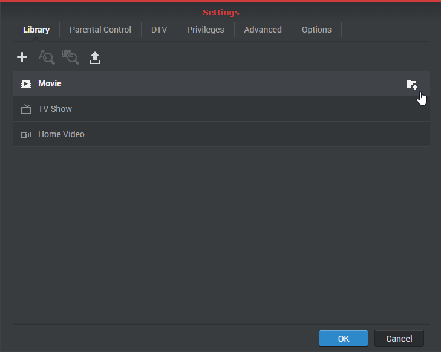

개요
Video Station을 사용하면 원하는 비디오를 더욱 효율적으로 찾을 수 있도록 비디오 컬렉션을 서로 다른 기본 또는 사용자 지정 라이브러리에 쉽게 구성하고 분류할 수 있습니다. 또한 클릭 몇 번만으로 쉽고 간단하게 비디오를 재생하고 공유할 수 있습니다.
1. Video Station 설치
Video Station을 설치하려면 패키지 센터로 이동하고 Video Station을 찾은 후 설치를 클릭합니다.

2. 비디오를 기본 라이브러리에 저장 및 분류
Video Station에서는 왼쪽 패널과 같이 다음과 같은 세 가지 기본 라이브러리를 제공합니다. 영화, TV 쇼 및 홈 비디오. 비디오가 올바르게 인덱싱되고 분류되도록 하려면 먼저 각 라이브러리에 대한 비디오 폴더를 추가한 후 해당 비디오 폴더에 파일을 저장해야 합니다. 기본적으로 video 공유 폴더에 세 가지 기본 라이브러리에 대한 비디오 폴더 3개가 생성됩니다. 영화, TV 쇼 및 홈 비디오. 그러나 이러한 세 가지 폴더 이외에 다음을 수행하여 라이브러리에 대한 비디오 폴더를 더 추가할 수도 있습니다.
시스템이 인터넷에서 두 가지 비디오 유형(영화 및 TV 쇼)에 대한 관련 메타데이터와 기타 정보(예: 포스터 이미지)를 자동으로 검색합니다. 따라서 비디오가 올바른 정보에 연결될 수 있도록 비디오가 각 라이브러리에 대해 지정된 비디오 유형과 일치해야 합니다.
기본 라이브러리의 비디오 폴더 추가
- 설정 > 라이브러리로 이동합니다.
- 폴더 추가 아이콘을 클릭하여 Synology NAS에서 폴더를 선택하고 대상 라이브러리를 선택합니다. 한 라이브러리에 비디오 폴더를 최대 100개까지 추가할 수 있습니다. 하지만, 폴더가 선택되면 다른 라이브러리에 대해 해당 폴더와 하위 폴더를 더 이상 선택할 수 없습니다. 
- 비디오 파일을 비디오 폴더에 저장하여 비디오를 해당 라이브러리로 분류합니다.
- 이제 라이브러리에서 원하는 비디오를 탐색하고 감상할 수 있습니다.

3. 비디오를 사용자 지정 라이브러리에 저장 및 분류
기본적으로 누구나 액세스할 수 있는 기본 세 가지 라이브러리 이외에도 DSM admin 또는 administrators 그룹에 속한 사용자는 사용자 지정 라이브러리를 생성하고 사용자에게 액세스 권한을 할당할 수 있습니다.
사용자 지정 라이브러리 생성
- 설정 > 라이브러리로 이동하고 더하기(+) 아이콘을 클릭하여 라이브러리를 생성합니다.
- 새 라이브러리 이름을 지정하고 폴더에 저장할 비디오 유형을 선택합니다. 그런 다음 누구나 라이브러리에 액세스할 수 있게 하려면 공개를 선택하고 액세스를 권한이 있는 특정 사용자로 제한하려면 비공개를 선택합니다. 인터넷에서 정확한 비디오 정보가 수집되도록 폴더에 저장하는 비디오가 여기에서 선택한 유형과 일치해야 한다는 점에 유의하십시오.
- 비공개를 선택한 경우 권한 할당을 클릭하고 확인란을 선택하여 사용자에게 액세스 권한을 부여합니다.

4. 비디오 재생
비디오 파일을 서로 다른 라이브러리로 분류하면 아래 단계를 수행하여 Video Station에서 비디오를 재생할 수 있습니다. 먼저 컴퓨터에 VLC 미디어 플레이어(Windows, Linux)를 설치하는 것이 좋습니다. 로컬 컴퓨터에서 비디오를 재생할 수 있을 뿐만 아니라 비디오를 DLNA/UPnP 호환 DMA 또는 AirPlay 호환 장치에 스트리밍하여 재생할 수도 있습니다.
내장된 비디오 플레이어로 비디오 재생
- 재생할 비디오 클립을 선택한 후 비디오 이미지에서 재생 아이콘을 클릭합니다.
- 비디오가 즉시 재생됩니다. 재생되지 않는 경우 웹 브라우저에서 비디오 형식이 지원되는지 또는 컴퓨터에 VLC 플러그인이 설치되어 있는지 확인하십시오.
- 필요에 따라 비디오 플레이어 아래에 있는 진행 상태 막대와 화면 상의 버튼을 사용합니다. 또한 볼륨을 조절하거나, 비디오 재생 품질과 오디오 트랙을 선택하거나, 자막을 켜거나, 비디오를 다른 장치로 스트리밍할 수 있습니다(해당되는 경우).


VLC 플러그인 및 지원되는 장치에 대한 자세한 정보는 DSM 도움말 > Video Station > 비디오 재생을 참조하십시오.
5. 비디오를 공개로 공유
공개 공유 기능을 사용하면 Video Station을 사용하여 비디오를 간편하게 다른 사람과 공유할 수 있고, 공유된 모든 비디오는 링크를 통해 누구에게나 공개적으로 액세스될 수 있습니다.
다른 사람과 비디오 공유
- 비디오 라이브러리로 이동하고 왼쪽 위 구석에 있는 모두를 클릭하여 이 라이브러리에 있는 모든 비디오를 감상합니다.
- 선택 모드 아이콘을 클릭하거나 Ctrl 또는 Shift를 길게 눌러 비디오를 여러 개 선택합니다. 그런 다음 공개 공유 아이콘을 클릭합니다.
- 공유할 비디오를 하나만 선택하면 해당 비디오가 공유된 비디오 이름의 공유 컬렉션에 추가됩니다. 여기에서 공유된 모든 비디오를 하나씩 관리할 수 있습니다.
- 공유할 비디오를 여러 개 선택하면 비디오는 새 공유 컬렉션으로 그룹화됩니다.
- 필요한 경우 유효 기간을 지정합니다.
- 또한 대상 영화 이미지에서 자세히 아이콘을 클릭하고 공개 공유를 클릭하여 선택한 비디오를 공유된 비디오에 추가할 수 있습니다.
- 링크를 이메일, 인스턴트 메시지 및 웹 페이지에 복사하고 붙여 넣어 비디오를 간편하게 모든 사람과 공유합니다.


6. 모바일 장치에서 비디오 구성 및 감상
모바일 장치를 통해 Video Station에 연결하려면 아래 QR 코드를 사용하여 iOS/Android 장치에 DS video를 다운로드하여 모바일 장치에서 비디오를 재생하고 컬렉션을 구성하거나, 집에서나 이동 중에 DMA 또는 AirPlay 장치로 비디오를 스트리밍할 수 있습니다.